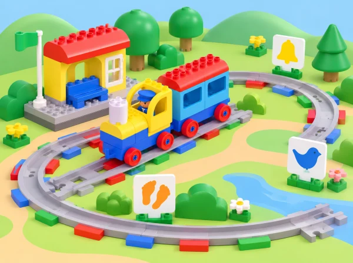
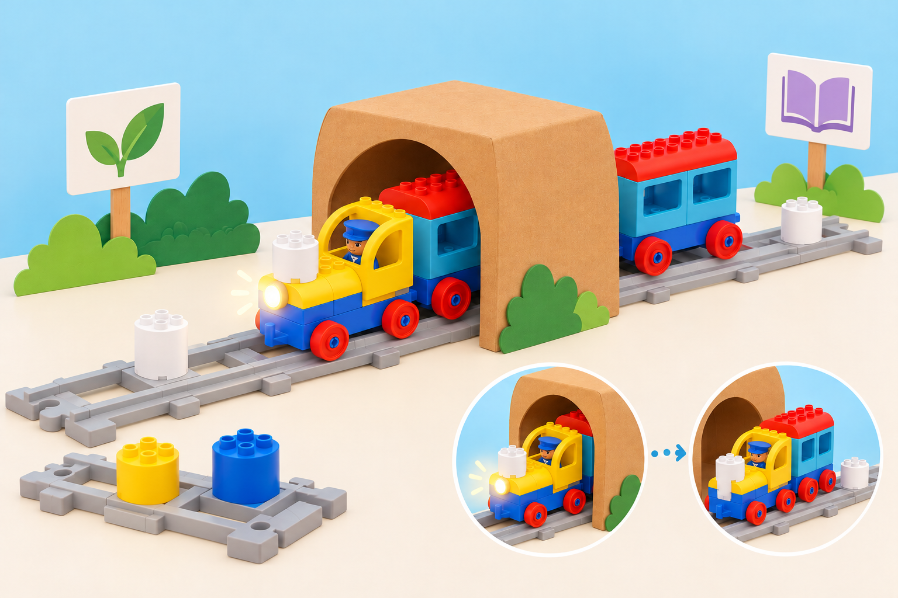

Missatges per a l’estació
🏷️ Llengua i comunicació
🌱 Situació, repte i intenció
La situació treballa seqüenciació, categorització, vocabulari d’arribada/pausa/continuació i comunicació amb diversos canals. Els sons poden enriquir el joc, però cada so té una targeta visual equivalent i ningú necessita escoltar-lo per seguir el trajecte.
🎯 Aprenentatges i vocabulari
- Descriure un viatge com una seqüència d’instruccions amb inici, parada i final.
- Observar i comprovar la funció dels maons d’acció disponibles, sense deduir-la només pel color.
- Triar on col·locar un avís i una parada perquè tinguen sentit en la ruta.
- Relacionar una acció del tren amb una paraula, so o pictograma entés pel grup.
- Revisar una predicció quan el que fa el tren no coincideix amb el que esperàvem.
Per a l’observació docent, busquem tres indicis: l’infant participa en la seqüència o el relat; associa almenys un maó amb un efecte que ha vist; i usa eixa observació per a explicar o canviar la ruta.
🧰 Materials i preparació
Comproveu el Coding Express físic i l’app disponible: nombre de vies, figuretes, maons d’acció i capacitat sonora del model. Prepareu una via de doble extrem (LEGO recomana huit trams), una estació inicial, el jardí i la biblioteca com a destinacions, i targetes amb eixida, avís, pausa i arribada. Reserveu els maons roig i verd per a l’extensió només si el grup ja n’ha investigat la funció en una lliçó anterior.
Si només hi ha un set, feu torns curts de muntatge i observació amb la resta del grup treballant la seqüència sobre un mapa de paper. No afegiu un maó absent de la caixa ni expliqueu una funció que encara no s’ha comprovat.
📅 Seqüència didàctica
Preparem un codi d’avís i pausa
Fase 1 · Activem i prediem
Inicieu una conversa sobre estacions que el grup conega: què ens avisa que alguna cosa s’acosta?, com podem saber que és moment d’esperar? No cal imitar moviments físics; feu el joc amb targetes, figures o gestos voluntaris.
Fase 2 · Explorem i construïm
Acordeu tres senyals: el groc significa «avís» i acompanya el so que el model reprodueix; el blau indica la pausa per a la parada de servei del relat; una targeta de fletxa assenyala que el tren continua. Cada parella posa les targetes en l’ordre del viatge jardí → biblioteca.
Fase 3 · Expliquem i registrem
Expliqueu què passarà després de cada senyal. Representeu la seqüència amb tres o quatre pictogrames i conserveu-la com a codi de referència per a les proves següents.
Fase 4 · Apliquem i millorem
Abans d’encendre el tren, feu que una altra parella intente llegir la seqüència només amb les targetes. Si hi ha més d’una interpretació possible, simplifiqueu el codi. Com a suport, oferiu dues destinacions i dues targetes; com a ampliació, afegiu una tercera parada sense canviar el significat dels símbols.
Fase 5 · Comprovem i reflexionem
Provem maons d’acció i construïm la ruta
Fase 1 · Activem i prediem
Munteu l’estació i les dues destinacions amb figures de passatgers i una via de doble extrem. Abans de provar cada maó, pregunteu què penseu que farà i assenyaleu el senyal que s’hi relaciona.
Fase 2 · Explorem i construïm
Poseu un maó groc en un tram curt i observeu què passa; retireu-lo i repetiu la prova amb el maó blau. En la versió descrita per LEGO, el groc fa sonar l’avís i el blau representa la parada de servei. Compareu-ho amb les targetes de la primera sessió.
Fase 3 · Expliquem i registrem
Completeu una taula visual amb «maó / predicció / què hem vist / on el col·loquem». Si el model del centre respon d’una altra manera, anoteu la diferència i useu com a referència el comportament real del set.
Fase 4 · Apliquem i millorem
Col·loqueu els maons en els llocs que millor expliquen el relat jardí → biblioteca. Abans de cada passada, una persona assenyala la seqüència prevista, una altra observa el tren i una tercera descriu què ha passat. Eviteu bloquejar el tren amb les mans o posar-les davant de la via en moviment.
Fase 5 · Comprovem i reflexionem
Fem un túnel, afegim llum i contem el viatge
Fase 1 · Activem i prediem
Construïu un túnel de cartó o useu una targeta de túnel amb espai suficient sobre la via. Predieu què farà la llum del tren quan hi entre i quan n’isca.
Fase 2 · Explorem i construïm
Col·loqueu un maó blanc abans i un després del túnel, si el set els inclou. Feu una sola passada i compareu el resultat amb la predicció. La peça blanca controla la llum en aquest sistema; si no hi ha túnel o maons blancs, representeu el canvi amb una targeta «llum encesa/apagada» i identifiqueu-ho com a model de paper.

Fase 3 · Expliquem i registrem
Afegiu al mapa el túnel, els maons i el resultat observat. Diferencieu la funció comprovada en el tren físic de la que s’ha representat amb targetes.
Fase 4 · Apliquem i millorem
Completeu una ruta amb avís groc, pausa blava i canvi de llum, afegint les destinacions en l’ordre acordat. Un equip narra amb pictogrames o paraules i un altre comprova si cada senyal coincideix amb el moviment observat. Milloreu la ruta canviant un maó de lloc, una targeta o l’ordre.
Fase 5 · Comprovem i reflexionem
🧪 Evidències i avaluació
Recolliu les targetes ordenades, la construcció de les destinacions, la seqüència física de la via, la taula de maons i la predicció de llum. Observeu si l’infant:
- classifica peces o destinacions i explica amb què s’ha basat;
- descompon el trajecte en passos que es poden representar;
- fa una predicció abans de l’execució i compara el que esperava amb el que ha vist;
- descriu el so/llum amb paraules, símbols, gestos o comunicació augmentativa;
- participa en una decisió de millora o ajuda a una altra parella a seguir el codi.
Documenteu frases o accions concretes («ha posat el groc abans del pont perquè vol avisar») en lloc d’una nota general de participació. Per a tancar, completeu en grup «pensàvem que…», «hem vist que…» i «la pròxima ruta…».
♿ Participació, accessibilitat i seguretat
Oferiu equivalent visual per a cada so, volum baix o silenci, vies i pictogrames amb bon contrast, targetes tàctils i torns previsibles. Una persona pot narrar, ordenar targetes, observar o construir sense haver d’operar el tren. No és necessari que l’alumnat forme una fila tocant-se; es poden representar passatgers amb figures, com fa l’activitat amb les figuretes.
Comproveu que la via és estable, manteniu els dits fora del tren en moviment i pareu-lo amb el control de l’app quan calga. No bloquegeu rodes ni forceu peces. Si una funció no està present o el so no es percep, completeu la mateixa seqüència amb targetes, deixant clar què s’ha observat físicament i què s’ha representat.
🔗 Referents i adaptació
Adapta Train Sound, lliçó 2 de 8 de Coding Express, destinada a PreK–K i pensada per a 30–45 minuts. La proposta oficial treballa seqüenciació, joc d’avís groc i pausa blava, estació/destinació amb via de doble extrem, ús dels maons d’acció groc/blau i, a l’ampliació, recorregut més llarg i maons blancs que encenen/apaguen la llum en passar pel túnel. També suggereix categoritzar elements del kit per destinacions i descompondre trajectes amb diverses parades.
La ruta jardí–biblioteca, els pictogrames, la taula d’observació i les alternatives sensorials són propis; la funció concreta es contrasta amb el tren físic del centre.